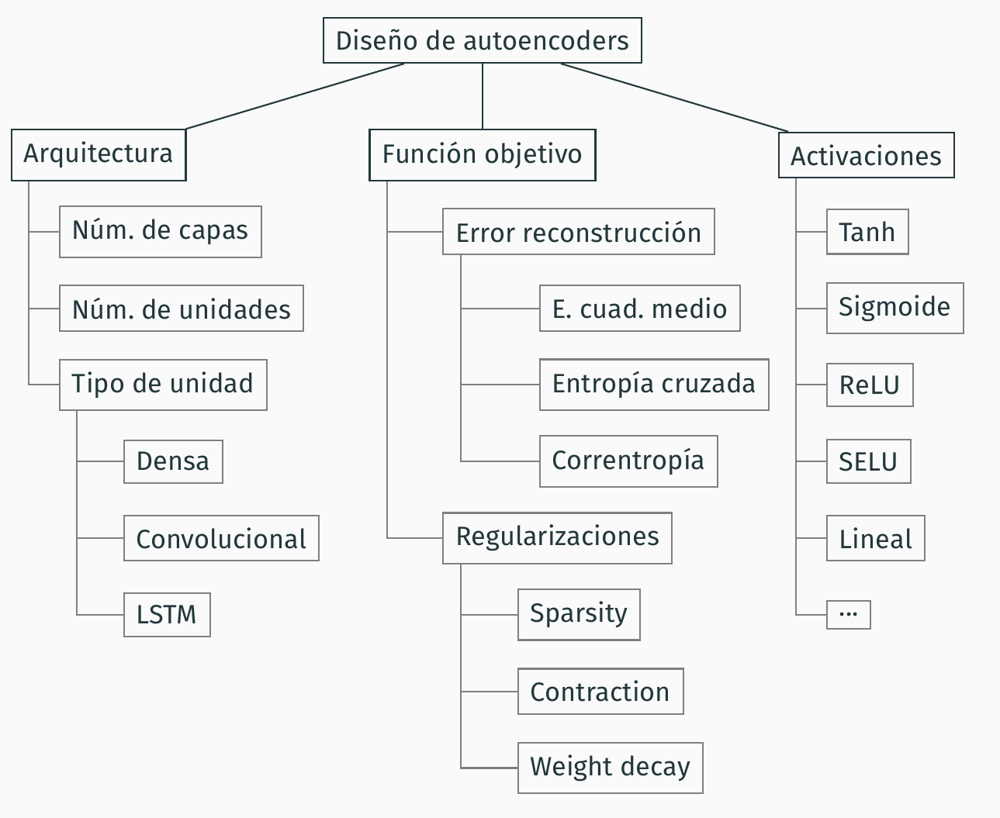

Leaving presentation mode.
Para iniciar la presentación, haz clic aquí o doble clic en cualquiera de las diapositivas. Para navegar por las diapositivas, puedes utilizar las flechas del teclado.
Directores:
Francisco Herrera Triguero
Francisco Charte Ojeda
6 de julio de 2022
Índice
Introducción
Contexto
Incremento en la recopilación de datos, su variedad y diversidad de fuentes
Incremento en la recopilación de datos, su variedad y diversidad de fuentes
Incremento en la recopilación de datos, su variedad y diversidad de fuentes
Motivación
¿Cómo se realiza aprendizaje de representaciones mediante modelos
neuronales profundos?
¿Qué beneficios se pueden obtener transformando datos a una
representación apropiada?
¿Se puede inducir un comportamiento específico en la transformación,
como separación de clases?
Este es un párrafo normal de texto
$$\alpha=\sum_{p=0}^ne^{i\pi}$$
Esta es una caja con texto bastante largo para que ocupe varias líneas. Esta es una caja con texto bastante largo para que ocupe varias líneas. Esta es una caja con texto bastante largo para que ocupe varias líneas. Esta es una caja con texto bastante largo para que ocupe varias líneas
Objetivos
Estudio teórico y producción de recursos sobre autoencoders
Desarrollo de implementaciones de autoencoders accesibles
Exploración de aplicaciones de los modelos basados en autoencoders y de problemas supervisados donde pueden tener potencial
Diseño de soluciones basadas en autoencoders para el tratamiento de problemas supervisados
¿Qué es un autoencoder?
Tutorial práctico sobre autoencoders
Charte, D., Charte, F., García, S., del Jesus, M. J., & Herrera, F. (2018). A practical tutorial on autoencoders for nonlinear feature fusion: Taxonomy, models, software and guidelines. Information Fusion, 44, 78-96.
Introducción
Fusión de características: combinar variables para mejorar el aprendizaje, eliminar información redundante e irrelevante
Autoencoders: mecanismos de fusión de características basados en aprendizaje profundo
Función objetivo: \(\mathcal J(W,b;S)= \sum_{x \in S} \mathcal L(x, (g\circ f)(x))\)
donde \(\mathcal L\) es error reconstrucción, e.g. \(\mathcal L_{\mathrm{MSE}}(u, v)=\left\lVert u - v\right\rVert_2^2~\)
Variaciones
Deep
Stacked
Dominio específico
Convolutional
LSTM
Regularización
Sparse autoencoder
Penaliza las activaciones frecuentes de neuronas:
$$\Omega_{\mathrm{SAE}}(W,b;S)=\sum_{i=1}^c \mathrm{KL}(\rho\Vert \hat\rho_i)~$$
Contractive autoencoder
Penaliza la sensibilidad a pequeños cambios en la entrada:
$$ \Omega_{\mathrm{CAE}}(W,b;S) = \sum_{x\in S}\left\lVert J_f(x) \right\rVert_F^2;~\left\lVert J_f(x) \right\rVert_F^2=
\sum_{j=1}^d\sum_{i=1}^c \left(\frac{\partial f_i}{\partial x_j}\left(x\right)\right)^2~.$$
Tolerancia a ruido
Denoising autoencoder
Aprende a restaurar instancias ruidosas
$$\mathcal J_{\mathrm{DAE}}(W,b;S)= \sum_{x\in S}\mathbb E_{\tilde x \sim q(\tilde x \vert x)} \left[\mathcal L(x, (g\circ f)(\tilde x))\right]$$
Robust autoencoder
Correntropía: función objetivo menos sensible a ruido
$$\mathcal L_{\mathrm{MCC}}(u, v)=-\sum_{k=1}^d\mathcal K_{\sigma}(u_k-v_k),\text{ donde } \mathcal K_{\sigma}(\alpha)=\frac{1}{\sqrt{2\pi}\sigma}\exp\left(-\frac{\alpha^2}{2\sigma^2}\right),$$
y \(\sigma\) es parámetro de \(\mathcal K\).
Modelos generativos
Variational autoencoder
Enfoque de inferencia variacional mediante reparameterization trick
Adversarial autoencoder
Inspirados por Generative Adversarial Networks
Comparación con otras técnicas
PCA: Idéntica solución al AE lineal optimizando ECM
Análisis factorial supone variables (factores) ocultas, como el VAE
LDA es supervisado, busca mejor separación de clases
Kernel PCA varía según el kernel escogido
Multidimensional scaling y Sammon mapping buscan preservar distancias relativas
Isomap y LLE mantienen estructura local, similar a Contractive AE
Restricted Boltzmann Machine es un modelo gráfico alternativo a AE para pretraining
Guía de diseño de autoencoders

Aplicaciones de autoencoders en aprendizaje de representaciones
Charte, D., Charte, F., del Jesus, M. J., & Herrera, F. (2020). An analysis on the use of autoencoders for representation learning: Fundamentals, learning task case studies, explainability and challenges. Neurocomputing, 404, 93-107.
Software para autoencoders en R: Ruta
Charte, D., Herrera, F., & Charte, F. (2019). Ruta: Implementations of neural autoencoders in R. Knowledge-Based Systems, 174, 4-8.
Software previo para AEs
Bibliotecas de cálculo tensorial (PyTorch, Tensorflow)
Barrera de acceso: APIs complejas
Extracción de características difícil
Implementación manual de muchas funciones
Implementaciones de autoencoders
Autoencoder (R): básico/sparse
SAENET (R): sparse/stacked
H2O (Java/R): básico
yadlt (python): básico/denoising
Es necesaria una implementación accesible y versátil de autoencoders
Arquitectura y funcionalidad
Clases definidas
ruta_autoencoder: modelo de aprendizaje puede entrenarse, codificar y reconstruir
ruta_network: estructura de capas neuronales pueden concatenarse
ruta_loss: función a optimizar (interna a Keras o externa: correntropía)
ruta_noise: un tipo de ruido aplicable a datos de entrada
Funcionalidades
Definir y personalizar aspectos de un modelo AE
Entrenar diferentes variantes de AE según varias funciones objetivo
Problemas no estándares en aprendizaje supervisado
Charte, D., Charte, F., García, S., & Herrera, F. (2019). A snapshot on nonstandard supervised learning problems: taxonomy, relationships, problem transformations and algorithm adaptations. Progress in Artificial Intelligence, 8(1), 1-14.
Nuevos modelos para reducir complejidad
Charte, D., Charte, F., & Herrera, F. (2021). Reducing data complexity using autoencoders with class-informed loss functions. IEEE Transactions on Pattern Analysis and Machine Intelligence.


Esta presentación ha sido compuesta utilizando el motor B6+ del W3C, con scripts y estilos modificados por David Charte. Consulta el código fuente en GitHub.